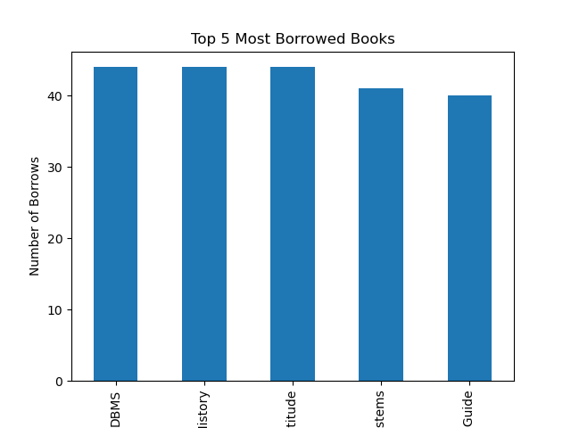
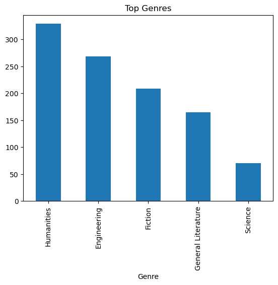
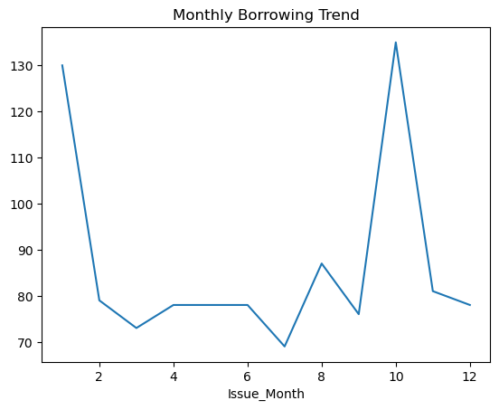
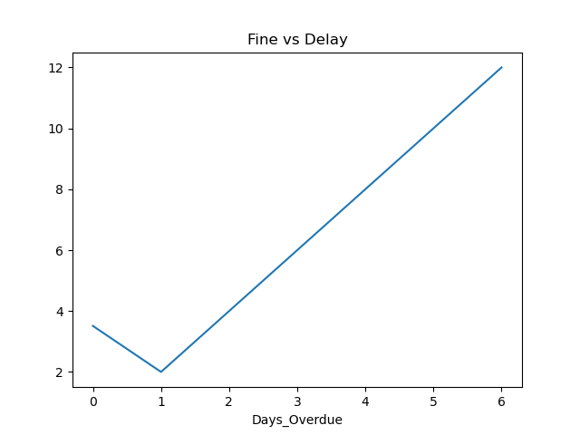
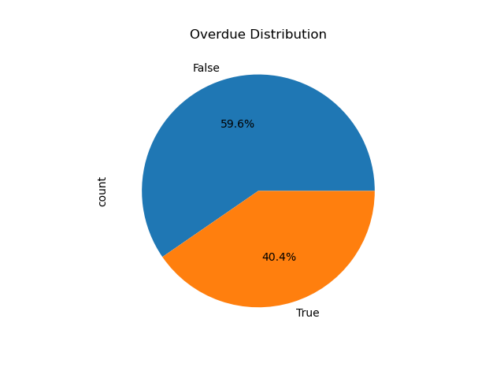
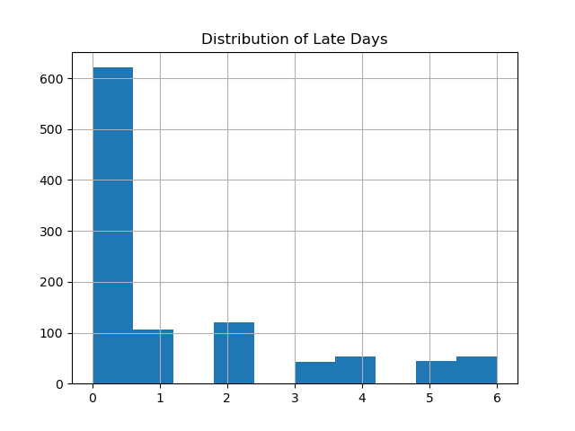
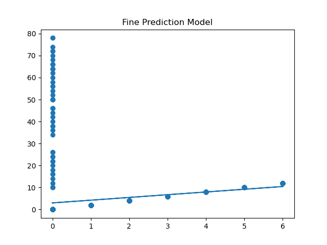

Exploratory Visualizations
We translated 1000+ raw rows into 8 actionable insights. Click any chart to open the high-resolution lightbox viewer.

1. Inventory Demand
Identification of the most frequently borrowed specific book titles to aid procurement.

2. Genre Distribution
Categorical breakdown showing Computer Science literature dominating total transactions.

3. Monthly Traffic Trends
Time-series analysis revealing extreme borrowing spikes during mid-term examination periods.

4. Financial Liabilities
Distribution histogram analyzing the frequency and financial spread of overdue penalties.

5. Return Compliance
Binary breakdown showing the exact ratio of on-time returns versus late infractions.

6. Days Overdue Spread
Scatter tracking of how late students keep books, identifying extreme edge-case outliers.

7. ML Regression Verification
Mathematical proof visualizing the linear relationship between time penalty and final fine output.

8. Feature Correlates
Advanced heatmap mapping relationships between student departments and genre selection.